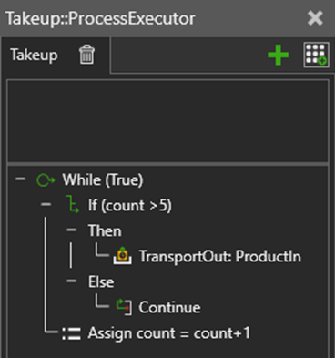

A Continue statement is used to loop back the execution of a While statement to its beginning. This, of course, would skip over all other remaining statements in the scope and re-evaluate the condition of the loop.
